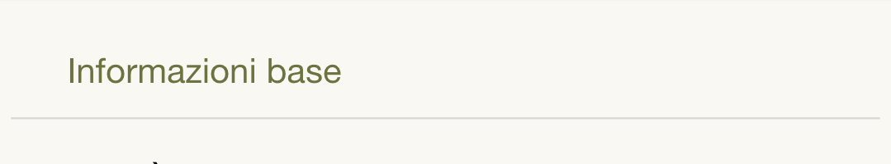
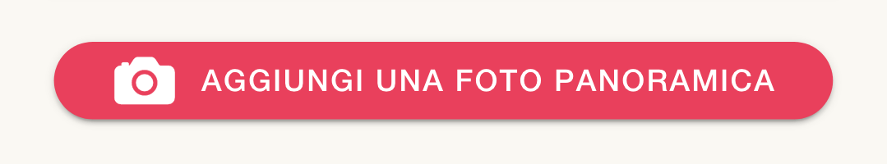
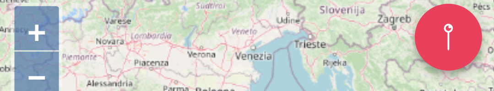

<ion-header>
  <ion-toolbar>
    <ion-title>Guida</ion-title>
  </ion-toolbar>
</ion-header>
<ion-card>
  
  <ion-card-header>
    <b>Passo 1: Dati</b>
  </ion-card-header>
  <ion-card-content>
    Aggiungi informazioni sulla segnalazione
  </ion-card-content>
</ion-card>
<ion-card>
  
  <ion-card-header>
    <b>Passo 2: Foto</b>
  </ion-card-header>
  <ion-card-content>
    Allega almeno una foto descrittiva
  </ion-card-content>
</ion-card>
<ion-card>
  
  <ion-card-header>
    <b>Passo 3: Mappa</b>
  </ion-card-header>
  <ion-card-content>
    Segna con lo spillo il luogo della segnalazione
  </ion-card-content>
</ion-card>

<ion-item>
  <ion-button item-start (click)="dismiss()">
    Chiudi
  </ion-button>
  <ion-toggle item-end [(ngModel)]="hidehelper" (ionChange)="changeToggle()"></ion-toggle>
  <ion-label item-end >Nascondi</ion-label>
</ion-item>